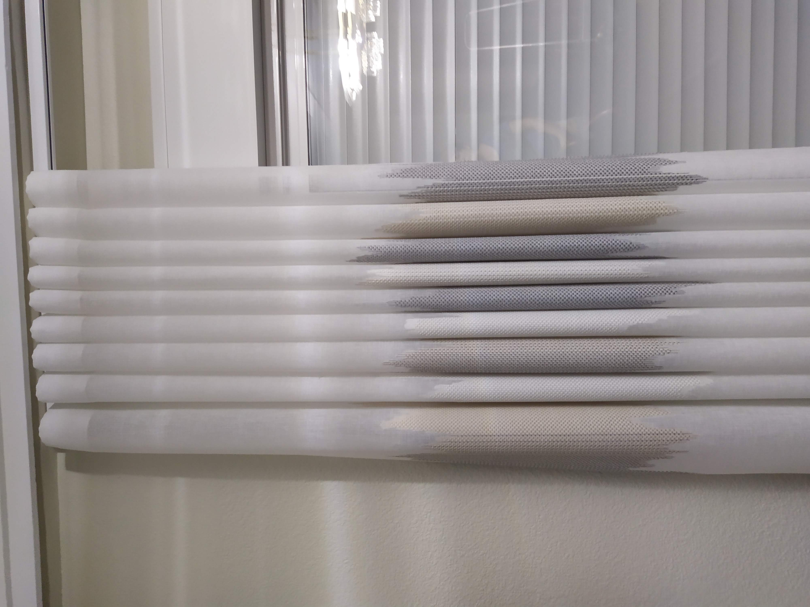
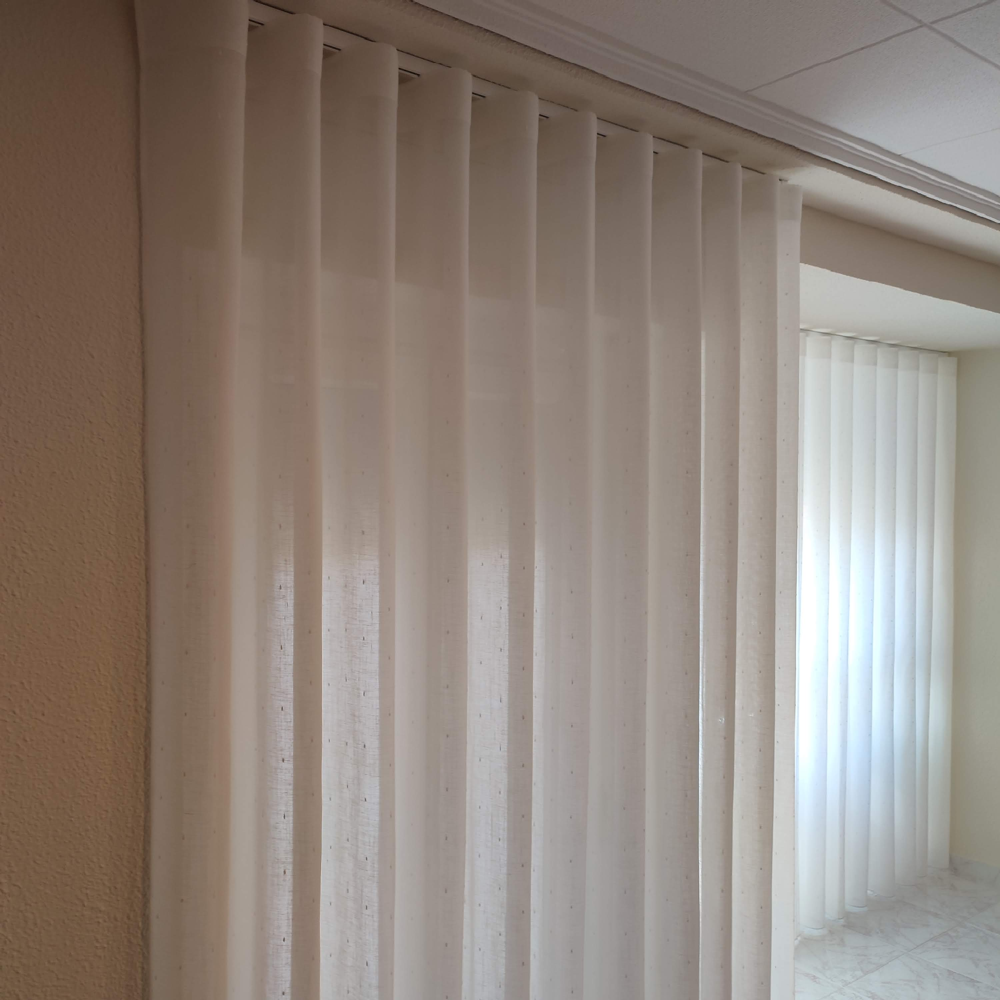

Cortinas a la medida
Confeccion personalizada para salones, dormitorios y espacios comerciales.
Que ofrecemos
Disenamos cortinas a medida para equilibrar entrada de luz, privacidad y caida del tejido en cada ventana. Trabajamos ondas perfectas, plisados y combinaciones de visillo con opaco para conseguir un acabado limpio y elegante.
Cada proyecto se ajusta al uso real de la estancia: salon, dormitorio, despacho o vivienda turistica. Definimos confeccion, forro y sistema de sujecion para que el conjunto funcione bien y se vea mejor.
Proceso de trabajo
Visitamos el espacio para medir, mostrar muestrarios y recomendar la mejor solucion segun orientacion, altura y estilo decorativo. Despues confeccionamos a medida e instalamos con remate final y revisamos pliegues, arrastre y apertura.
Galeria de cortinas a medida



